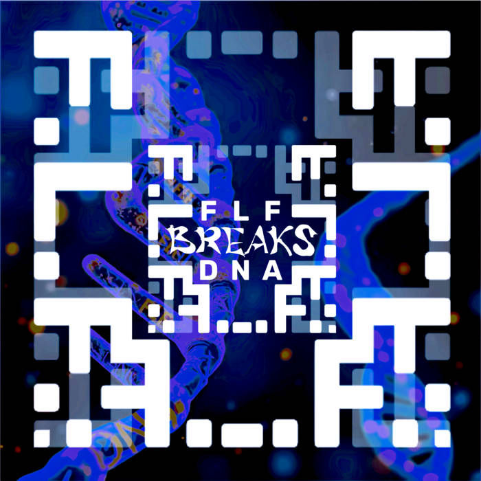

Quietman
Melodic trance, progressive electronic music and atmospheric soundscapes. Explore new recordings and rediscovered material from the Quietman archives.
The people and projects behind the music.
Melodic trance, progressive electronic music and atmospheric soundscapes. Explore new recordings and rediscovered material from the Quietman archives.

Electronic music spanning breakbeat, underground dance music and experimental sounds. Explore the original recordings, remasters and archive releases.

Three decades of production, remixing and electronic music, from underground dance records to ambient and experimental work.
Full profileNew London School of Electronics was the early-’90s collaboration between Rising High Records founder Caspar Pound and Laurence Elliott-Potter (Larry Lush). The duo released Voices of the Rainforest in 1993, bringing together ambient textures, acid and early trance. Their 1994 album The Deepest Cut explored a slower side of electronic music. The 21st Anniversary Producer Edition adds three bonus tracks, including the Blackout Mix recorded live at Erotica in Paris.
Mark Sinclair is a DJ and producer who co-founded Pendragon with Kate Pendragon in 1991. He started out playing northern soul in Brixton before moving into acid house and progressive house. Pendragon grew from parties the pair organised at their kitchen table into one of London’s longest-running underground trance nights, selling out Brixton Academy for its tenth birthday. Sinclair’s sets brought together progressive house and harder, uplifting trance, and the parties gave DJs such as Fausto an early foothold in London.
Pendragon also had a record shop and a label. Sinclair’s 1999 single Every Morning came out on Pendragon People Records. His studio work with Larry Lush is collected on Remixology Vol. 1, released through Black Unicorn Recordings and featuring I Know You, Riding the Waves and I Say a Prayer.